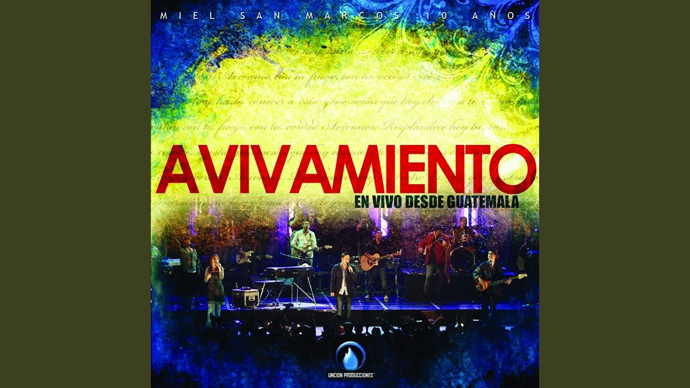

Miel San Marcos
Miel San Marcos es un grupo guatemalteco de música cristiana integrado por los tres hermanos Josh, Luis y Sammy Morales.El nombre "Miel" se deriva de las siglas de Ministerios Elim, nombre inicial de la iglesia Tabernáculo de Avivamiento, y San Marcos, por el nombre del departamento en el que está ubicada
-  Vivo Para Adorarte
- Cristo No Está Muerto (feat. Juan Carlos Alvarado)
- El Santo De Israel
- El Poderoso De Israel
- Grande Y Fuerte
- Los Muros Caerán
- Toda La Noche Sin Parar
0:00 / 0:00